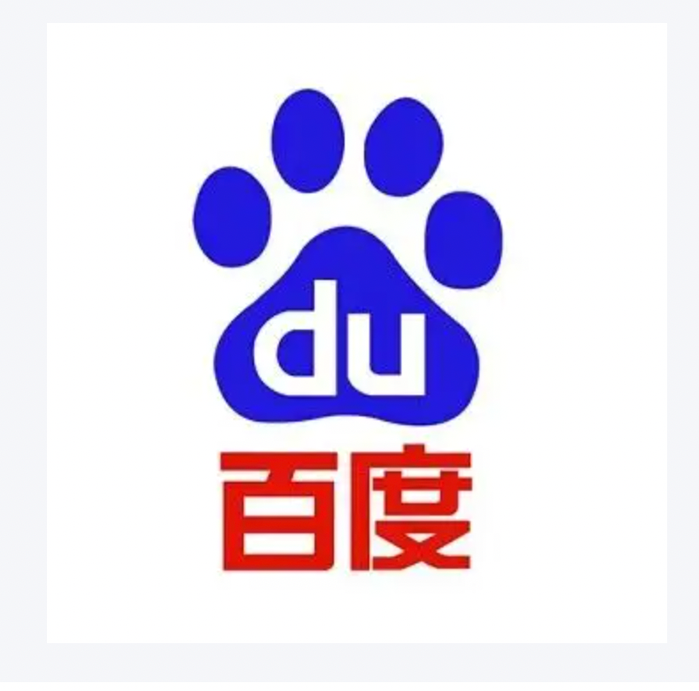
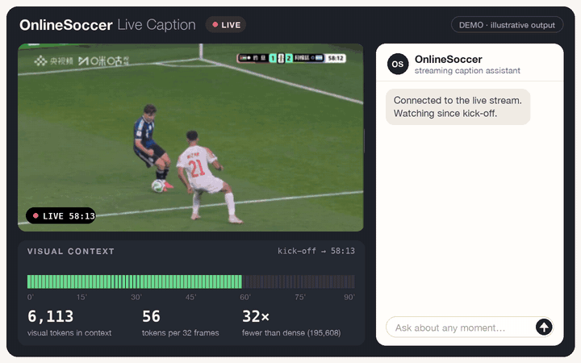
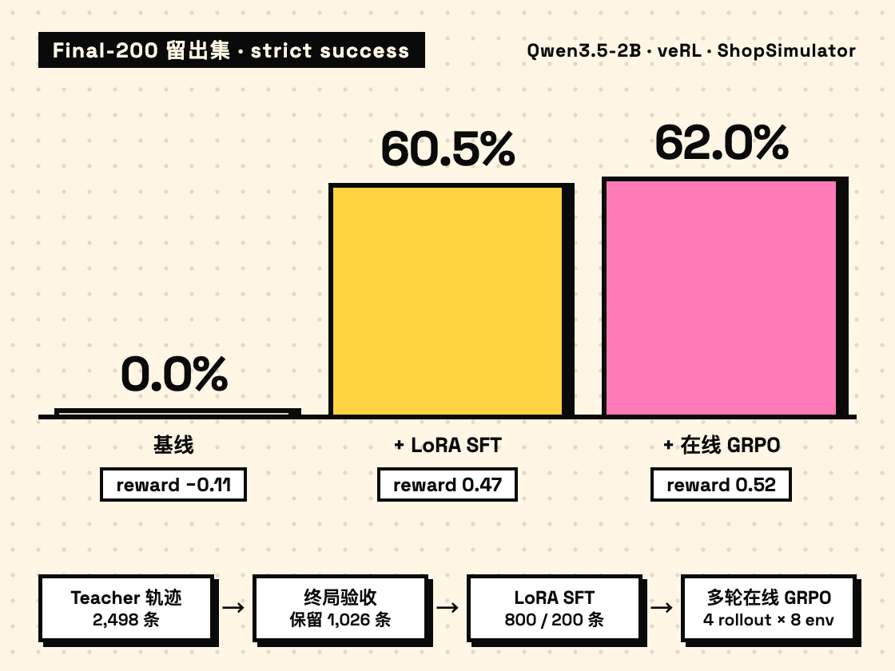
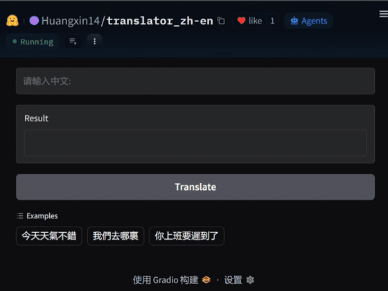
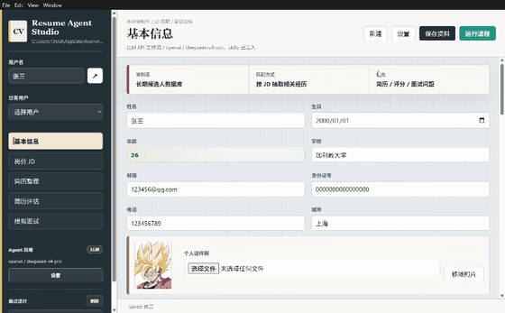

01
深度学习 & 框架
Deep Learning
- PyTorch
- Transformers
- PaddlePaddle
- PaddleOCR
02Skills
五组技能栈，覆盖从模型训练到推理、从数据处理到系统部署的完整链路。
Deep Learning
Large Models
Computer Vision
Retrieval & RecSys
Engineering & Data
03Internship
在百度电商部门参与智能投放项目：视频优选模型、多模态表征。
在咪咕足球直播业务中落地多模态 AI：流式视频 Caption、AI 解说、球员检测与比赛 UI 识别。

2026.07 – 2026.11（预计）
智能投放通过模型算法技术，在创编汰换、出价、预算、流量、素材生成等方面进行智能决策，旨在帮助广告主以更少的投入最大限度地提升广告投放效果，降低广告主投放广告的门槛，是电商商业投放重要的产品方向。 目前智能投放主要是基于规则和后验效果进行视频的选择和创编，缺少先验信息的利用和判断，导致基建冗余，故本期搭建了视频优选模型，对智能投放视频进行排序优选，进而带动智能投放收入增长。
针对 v1 的问题，由端到端训练改为传统两阶段训练，并把 transtype（80/90）作为特征注入下游推荐模型：
1.基于业务指标训练一个多模态表征模型，表征模型输出多模态表征向量
2.表征向量作为内容特征进入下游推荐模型TREAD ，训练推荐模型
相比于传统内容向量来源于表征模型最后一层，TREAD将表征模型多层内容向量投影成固定维度的token与token化的商品侧特征以及task-query token做交互，通过task-query token对其余token的注意力分数进行剪枝，最后在兼顾计算量的同时提高了评测指标。
线上的视频score基于预测ctr/ctcvr/play5分数的加权和。
概要：将视频物料使用多模态表征模型推理（qwen3-vl-embedding-8b）产出video_emb供下游推荐系统/智能投放出价模型等使用
视频物料存在视频长度过长（7-8min）的情况，调查后发现是广告主上传视频物料由多段短视频拼接而成。而表征模型上下文无法容纳太多视频帧及asr文本，因此需要对视频采取切片，逐切片推理后再对同一视频的多个video_emb聚合（avg_pooling）
2026.01 – 2026.07
面向“边看直播边提问”的业务需求，设计并实现流式视频 caption 系统：直播进行到任意时刻，用户都可以问某一时刻发生了什么（如在第 30 分钟问“第 10 分钟发生了什么？”），模型依据已播出的画面，生成那一刻的解说描述。
04Projects
四个核心 AI 项目：流式足球视频 Caption、中文购物 Agent 的 SFT + GRPO 后训练、从零实现的 Transformer 翻译，以及多 Agent 求职辅助工作流。

直播进行到任意时刻都能回看提问：比如在第 30 分钟问「第 10 分钟发生了什么？」，模型依据已播出的画面，生成那一刻的解说描述（caption）。一场比赛超过 90 分钟，画面要一直累积在 VLM 的上下文里；项目把论文 OnlineSoccer 的因果时空压缩策略用到直播流上，画面边播边压缩，视觉 token 约少 32 倍。

基于 ShopSimulator v2.1 搭建中文购物 Agent 的后训练与评测流水线：Qwen3.5-2B 先做 LoRA SFT，再用 veRL 做多轮在线 GRPO。在 200 题留出集上，strict success 从 0% 提升到 62.0%，平均 reward 从 −0.11 提升到 0.52。训练用终局规则 reward，不用 LLM-as-Judge；评测由代码硬校验和双 LLM 评审组成。
reward_valid=false，不当作有效的 0 分。
参照《Attention Is All You Need》从零实现 Encoder-Decoder Transformer 翻译模型，完成中英双语 Tokenizer、平行语料清洗对齐、训练调优与 Hugging Face 在线部署，形成从模型构建到应用上线的完整闭环。

面向 AI 算法求职场景，搭建基于 LLM 的求职辅助工作流，根据用户资料库与岗位 JD 自动完成简历定制、匹配度评估、优化建议生成与模拟面试准备，覆盖从投递前筛选到面试前复盘的完整流程。
05Competitions
以真实赛题验证低资源翻译、Agent 构建与检索增强能力。
低资源古语言机器翻译竞赛
“寻找 AI 全能王”天池竞赛
06Publication
五篇第一作者论文，覆盖视频广告推荐、多模态视频理解、指令数据选择与视觉识别：4 篇在投，1 篇改投中。
Paper No. 01Venue · WWWRank · CCF-ARole · 第一作者
第一作者 · 百度
视频广告要在同一素材上同时预估点击率（CTR）、转化率（CTCVR）与 5 秒播放率（Play5）。常见做法把视频内容压成一个向量，既看不出各任务依赖编码器的哪一层，也无法控制参与计算的内容 token 数量。TREAD 让三个任务 query 直接读取冻结多模态编码器的 21 个层级 token 和 1 个结构化特征 token（5 个商品字段 + 投放上下文 + 视频 URL + 价格），在一次自注意力中完成多任务读出。
保留 11/21 个 token 时，三个任务 AUC 变化均小于 0.1%，自注意力 FLOPs 降低 41%，延迟从 1.96 ms 降到 1.59 ms；与单向量内容模型、EARec 适配模型、无内容模型相比，三个任务 AUC 均最高。商品字段全部替换为 UNK 时，CTR / CTCVR AUC 仅下降 1.3% / 2.8%（无内容模型为 17.8% / 18.4%），说明商品信息缺失时内容表示能兜底。线上 20% 流量 A/B：点击 +10.14%、转化 +15.90%、GMV +15.61%，曝光 +7.13%、CTR +2.81%、CTCVR +8.19%。
Paper No. 02Venue · CSCWDRank · CCF-CRole · 第一作者
第一作者
指令数据选择其实是两件事：哪些源问题拿到训练预算（源分配），以及同一源问题下哪几条记录被选中（记录排序）。常见的全局比较把两者混在一起，即使输入 token 上限相同，实际监督 token 与训练步数也可能不同。论文提出 source-controlled 评测协议：在完全相同的 source / type / token-length 单元格内配对「排序选出」与「均匀采样」的记录，让源配额、记录数、输入 token、监督 token 与训练步数全部对齐，把排序本身的价值单独测出来。
在 223,553 条 MetaMathQA 记录与 Qwen2.5-1.5B 上，LESS 排序的平均严格参考答案匹配率为 79.731%，配对的均匀采样为 78.429%，相对提升 1.66%；三种构造与三个种子的均值均为正，去掉任一构造或种子后仍为正，条件 95% bootstrap 区间为 [0.000, 2.604] 个百分点。
Paper No. 03Venue · FGRank · CCF-CRole · 第一作者
第一作者
小样本评测通常只报告支持样本数（K）和采集组数（U），但这两个数并不能确定支持记录在组间怎么分配——同样「5 shot × 2 组」，可以是 4+1，也可以是 3+2。论文把这一被忽略的分配变量单独拎出来，在 HaGRIDv2 关键点数据的 18 类手势上，枚举 K=5 的全部 7 种分配，并让每条记录的入选概率保持一致，从而只观察分配带来的差异。
把 4+1 重新分配为 3+2 后，坐标特征与混合几何特征的 ridge 召回分别提升 1.93 与 1.73 个百分点，近似联合 95% 区间为 [1.33, 2.52] 与 [1.14, 2.33]；三组分配的效应更小。在固定组数下该效应同样出现在 RBF SVM 分析中。
Paper No. 04Venue · CSCWDRank · CCF-CRole · 第一作者
第一作者 · 咪咕视讯实习成果
给足球片段生成解说草稿时，每个片段都要占用一次语言模型的注意力计算与 KV 存储，稠密视觉前缀让这个成本很高。直接采样虽然缩短了序列，却让未采样的帧完全无法参与生成。OnlineSoccer 先把时序证据聚合再做输出选择：Temporal Mamba Proj 用降宽的因果状态空间模型逐时间单元更新，配合空间池化与通道打包压缩前缀；推理时只需调整输出 stride 就能改变视觉 token 预算，无需重新训练。
在 SoccerNet Caption（MatchTime 校正）的居中片段上，不做采样的接口只用 112 个视觉 token 就达到 37.36 CIDEr，比稠密基线相对提升 7.91%；stride-2 只用 56 个 token，CIDEr 37.54，同等推理预算下比池化策略高 19.55%。纯时序扫描中前缀缩小 8 倍，CIDEr 波动仅为 stride-1 得分的 0.81%，而直接采样下降 14.36%。
Paper No. 05Status · 改投中Role · 第一作者
第一作者
面向无人机航拍与密集交通场景的小目标检测问题，重新设计 RT-DETR decoder 的跨层残差信息流，缓解深层 refinement 中弱定位线索被削弱的问题。
在 VisDrone2019 小目标检测基准上，三层 decoder 的 ARRT-DETR 达到 47.9 mAP50 与 29.6 mAP50-95，相较 RT-DETR-L 在参数量、GFLOPs 和延迟更低的情况下取得更高检测精度。
07Education
电子信息工程学士 → 交通信息工程及控制硕士
时间：2025.9 — 至今
交通信息工程及控制 · 硕士
研究方向流式长视频内容理解
时间：2021.9 — 2025.6
电子信息工程 · 学士
专业基础信号处理、嵌入式系统、通信原理、程序设计
08Blog
写下的笔记与思考，点开卡片阅读全文。